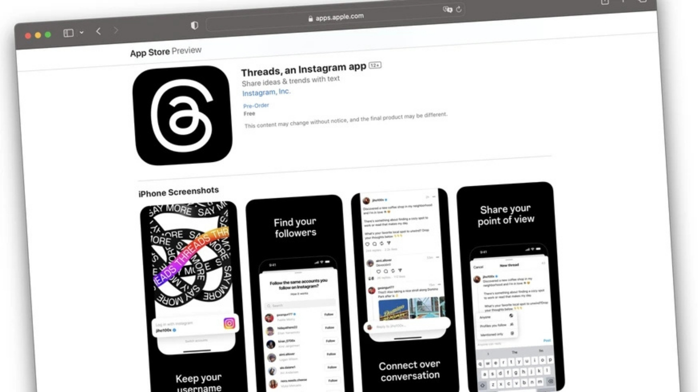
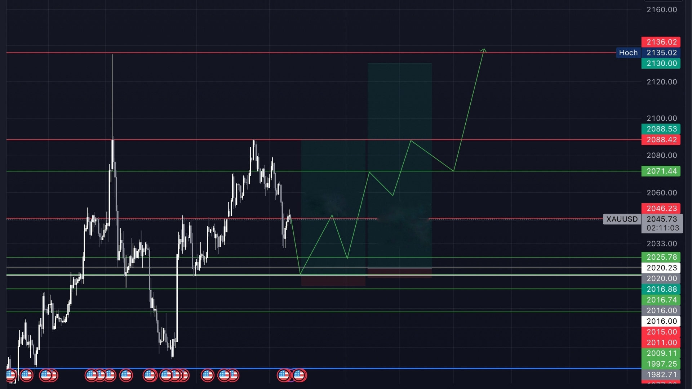

Als Meta Threads im Dezember 2023 im DACH-Raum ausrollte, war die Plattform für die meisten noch ein unbeschriebenes Blatt. Kein etablierter Algorithmus, keine gefestigte Community – nur viele neugierige Nutzer und ein offenes Spielfeld. Genau das war meine Chance.
Neue Plattformen folgen einer einfachen Logik: Je weniger Nutzer aktiv sind, desto grösser ist das Fenster, sich klar zu positionieren, ohne in der Masse unterzugehen. Wer früh versteht, wie ein neuer Algorithmus belohnt und bestraft, kann sich einen Vorsprung aufbauen, den spätere Nutzer nur schwer einholen. Ich wollte genau das verstehen – und entschied mich, die Nische der Krypto- und Trading-Community konsequent zu besetzen. Keine halben Sachen, keine thematischen Ausflüge in andere Bereiche. Eine Nische, eine Stimme, ein klares Versprechen an die Zielgruppe.

Der Plan war schnell definiert: täglich posten, verschiedene Formate testen, den Algorithmus beobachten und die Reaktionen der Community ernst nehmen. Nicht als Feedback, das man irgendwann auswertet – sondern als Signal, das man sofort verarbeitet. Chartanalysen mit klaren Aussagen, Einblicke in Trading-Psychologie, Reaktionen auf aktuelle News-Events und vor allem: Transparenz über laufende Trades, inklusive der Positionen, die nicht aufgingen. Gerade letzteres war ein bewusster Entscheid. Im Trading-Umfeld ist Glaubwürdigkeit keine Selbstverständlichkeit. Wer nur Gewinne zeigt, wird früher oder später durchschaut. Wer auch Verluste teilt, baut etwas auf, das sich nicht kopieren lässt: echtes Vertrauen.
"Neue Plattformen sind Machtvakuum. Wer früh kommt, mit klarer Positionierung und echtem Mehrwert, kann sich einen Platz sichern, der später nur noch schwer zu besetzen ist."
— Lessons from Threads
Was als gezieltes Experiment begann, entwickelte sich schneller als erwartet. Aus Reichweite wurde Resonanz, aus Resonanz wurde Bindung. Innerhalb weniger Wochen zeigten die Zahlen, was die Strategie in der Praxis leistete: über 500.000 Aufrufe, 700 neue Follower und eine wachsende Gruppe an Menschen, die nicht nur lasen, sondern mitmachten, kommentierten, weiterteilten und andere mitbrachten. Threads hatte geliefert, was ich erhofft hatte – ein Schaufenster mit echter Aufmerksamkeit.
Doch Reichweite allein ist kein Fundament. Sie ist ein Einstieg. Der nächste Schritt war, aus flüchtigen Plattform-Interaktionen etwas Dauerhafteres zu bauen. Über den Link in der Bio entstand der Übergang zu Telegram – und damit zu einem Format, das echten Tiefgang erlaubte. Was mich dabei am meisten überraschte, war die Zusammensetzung der Gruppe: Nicht nur Einsteiger, die ihre ersten Schritte im Trading machten, sondern auch deutlich erfahrenere Trader und Investoren, die ihre Expertise regelmässig und ohne Vorbehalt teilten. Die Dynamik, die sich daraus entwickelte, war kaum planbar gewesen.
Täglich wurden live Trades analysiert, News-Events gemeinsam abgewartet, Marktbewegungen in Echtzeit diskutiert. Anfänger stellten Fragen, die erfahrene Trader vor Jahren selbst gestellt hatten. Erfahrene Trader erkannten in den Fragen der Anfänger Denkmuster, über die es sich lohnte, noch einmal nachzudenken. Es entstand kein klassischer Lehrkanal, sondern ein Ort des gegenseitigen Austauschs – und damit etwas, das weit mehr Wert hat als jede Follower-Zahl: eine Gemeinschaft, die sich selbst trägt.

Das Modell dahinter war im Nachhinein klarer als während der Umsetzung: Threads schuf Discovery und Sichtbarkeit, Telegram schuf Tiefe und Bindung. Zwei Plattformen, zwei Funktionen, ein sich selbst verstärkender Kreislauf. Wer auf Threads mit dem Content resonierte, landete in der Gruppe. Wer in der Gruppe aktiv war, sprach mit anderen darüber – und brachte sie auf Threads. Reichweite und Community begannen, sich gegenseitig zu nähren.
Was dieses Experiment letztlich gezeigt hat, lässt sich auf einen Kern reduzieren: Neue Plattformen sind Machtvakuum. Wer früh kommt, mit klarer Positionierung und echtem Mehrwert, kann sich einen Platz sichern, der später nur noch schwer zu besetzen ist. Nicht weil der Algorithmus es für immer so belohnt – sondern weil das Vertrauen, das in dieser frühen Phase entsteht, bleibt. Und Vertrauen ist im digitalen Raum die knappste Ressource überhaupt.